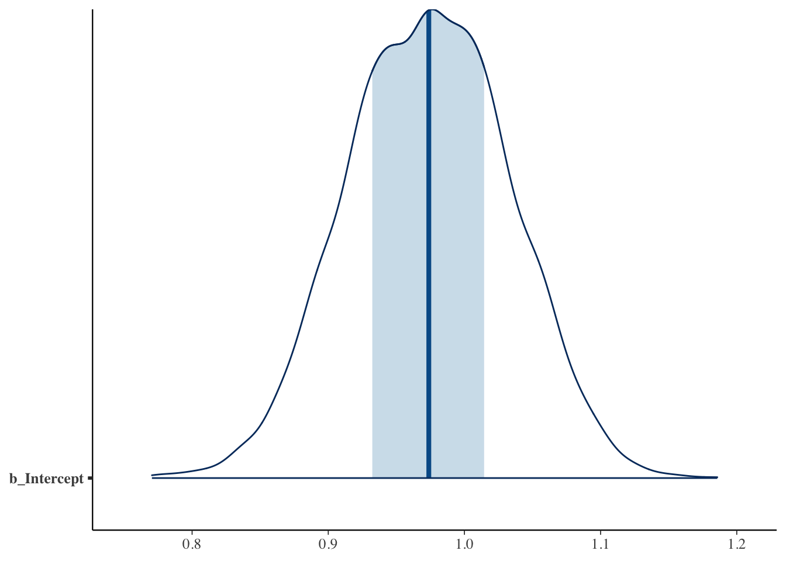
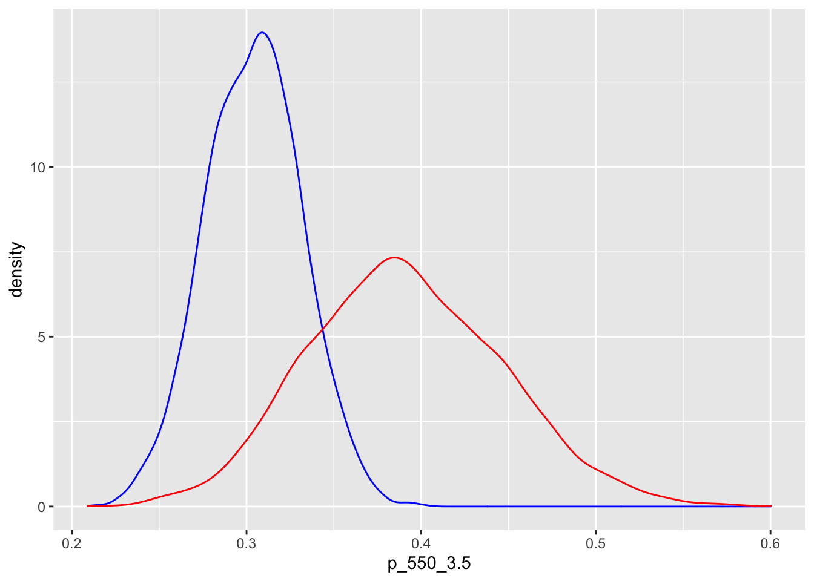

Chapter 9 Multiple Regression and Logistic Models
9.2 Multiple regression example
Exercise 1 in Chapter 12 describes a dataset that gives the winning time in seconds for the men’s and women’s 100 m butterfly race for the Olympics for the years 1964 through 2016. This data is available as the data frame olympic_butterfly in the ProbBayes package.
## Year Gender Time
## 1 2016 Women 55.48
## 2 2012 Women 55.98
## 3 2008 Women 56.73
## 4 2004 Women 57.72
## 5 2000 Women 56.61
## 6 1996 Women 59.13Create a new variable year_64 which is equal to the number of years after 1964. Also define a gender variable that is 1 (0) if the race is for women (men).
9.3 The model
Let \(y_j\) denote the winning time in seconds for the \(j\)th race. We assume that \(y_j\) is normal(\(\mu_j)\) where the means satisfy the regression model \[ \mu_j = \beta_0 + \beta_1 x_{1j} + \beta_2 x_{2j}, \] where \(x_{1j}\) and \(x_{2j}\) are respectively the years after 1964 and the indicator for gender.
We will assume a weakly informative prior, where each of \(\beta_0\), \(\beta_1\), \(\beta_2\) and \(\sigma\) are given flat distributions with high variances.
9.4 Fitting the model
The brm() function resembles the syntax of the popular lm() function, but this is implementing a Stan fit.
## Compiling Stan program...## Start samplingThe plot() function will plot trace and density graphs for each parameter.

The summary() function provides posterior summaries for each parameter.
## Family: gaussian
## Links: mu = identity; sigma = identity
## Formula: Time ~ year_64 + gender
## Data: olympic_butterfly2 (Number of observations: 27)
## Samples: 4 chains, each with iter = 2000; warmup = 1000; thin = 1;
## total post-warmup samples = 4000
##
## Population-Level Effects:
## Estimate Est.Error l-95% CI u-95% CI Rhat Bulk_ESS Tail_ESS
## Intercept 56.91 0.49 55.95 57.85 1.00 3758 2788
## year_64 -0.15 0.01 -0.17 -0.12 1.00 3977 2958
## gender 6.42 0.43 5.58 7.25 1.00 4018 2651
##
## Family Specific Parameters:
## Estimate Est.Error l-95% CI u-95% CI Rhat Bulk_ESS Tail_ESS
## sigma 1.11 0.17 0.84 1.50 1.00 3393 2634
##
## Samples were drawn using sampling(NUTS). For each parameter, Bulk_ESS
## and Tail_ESS are effective sample size measures, and Rhat is the potential
## scale reduction factor on split chains (at convergence, Rhat = 1).The posterior_samples() function outputs a matrix of simulated draws of \((\beta_0, \beta_1, \beta_2, \sigma)\).
To illustrate an inference problem, suppose one is interested in estimating the mean winning time of the men’s race in 1972 which is the function \[ h(\beta) = \beta_0 + 8 \beta_1 \]
Below we compute the function \(h(\beta)\) on the simulated draws and draw a posterior density estimate.

9.5 Logistic example
Exercise 8 of Chapter 12 describes a study where data was collected on some graduate student admission cases. The data is available as the data frame GradSchoolAdmission in the ProbBayes package. The variables include \(y\), a binary variable indicating admission and \(x_1\) and \(x_2\), the GRE score and GPA for the student.
## Admission GRE GPA
## 1 0 380 3.61
## 2 1 660 3.67
## 3 1 800 4.00
## 4 1 640 3.19
## 5 0 520 2.93
## 6 1 760 3.009.6 The model
Let \(p_i = P(y_i = 1)\) denote the probability of admission for the \(i\)th student. We consider the logistic model \[ \log \left(\frac{p_i}{1-p_i}\right) = \beta_0 + \beta_1 x_{1j} + \beta_2 x_{2j}, \]
We assume flat, weakly informative priors for \(\beta_0, \beta_1, \beta_2\).
9.7 Fitting the model
We use the brm() function for the Bayesian fitting of this model by Stan-MCMC where the syntax is similar to the glm() function for a traditional fit.
## Compiling Stan program...## Start samplingWe display trace and density estimate graphs for each regression parameter.

We summarize the marginal posterior distributions for each parameter.
## Family: bernoulli
## Links: mu = logit
## Formula: Admission ~ GRE + GPA
## Data: GradSchoolAdmission (Number of observations: 400)
## Samples: 4 chains, each with iter = 2000; warmup = 1000; thin = 1;
## total post-warmup samples = 4000
##
## Population-Level Effects:
## Estimate Est.Error l-95% CI u-95% CI Rhat Bulk_ESS Tail_ESS
## Intercept -5.00 1.08 -7.21 -2.92 1.00 2205 1937
## GRE 0.00 0.00 0.00 0.00 1.00 4208 3302
## GPA 0.76 0.32 0.17 1.40 1.00 1843 1661
##
## Samples were drawn using sampling(NUTS). For each parameter, Bulk_ESS
## and Tail_ESS are effective sample size measures, and Rhat is the potential
## scale reduction factor on split chains (at convergence, Rhat = 1).We use the posterior_samples() function to obtain the matrix of simulated draws from the joint posterior.
Suppose we are interested in estimating the probability of admission for two students with the following covariate values
- GRE = 550, GPA = 3.5
- GRE = 500, GPA = 4.0
Below we first define a function that computes the inverse logit of a value. By using this inverse logit function, we compute the probability of admission for each of these two students.
invlogit <- function(x){
exp(x) / (1 + exp(x))
}
post %>%
mutate(p_550_3.5 = invlogit(b_Intercept +
b_GRE * 550 + b_GPA * 3.5),
p_550_4.0 = invlogit(b_Intercept +
b_GRE * 550 + b_GPA * 4.0)) ->
postWe display density estimates for the probability of admission for these two students where the blue curve corresponds to the student where GRE = 550 and GPA = 3.5 and the red curve corresponds to the student where GRE = 550 and GPA = 4.0.
ggplot(post, aes(p_550_3.5)) +
geom_density(color = "blue") +
geom_density(aes(p_550_4.0),
color = "red")